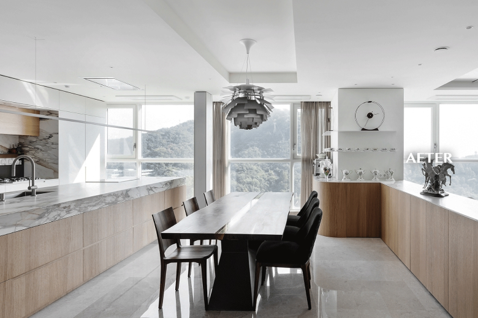
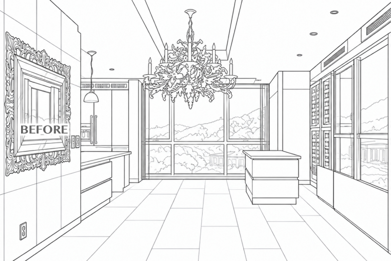

Space Story 01
은퇴 후 취향으로
은퇴 후 취향으로
채워갑니다


집에서 보내는 시간에 맞춰 바꾼 공용부
은퇴 후 집에서 보내는 시간이 많아진 부부는 대부분의 식사를 집에서 하고, 오랫동안 모은 야드로(LLADRO) 컬렉션을 일상 가까이 두길 원했습니다. 주방에는 넉넉한 조리·수납 동선을 확보하고 거실과 다이닝에는 컬렉션을 전시할 자리를 마련해, 식사와 취향이 공용부 안에서 자연스럽게 이어지도록 했습니다.
-
가구 구성
요리와 수집 취향을 즐기는 은퇴한 2인 부부
-
위치
남산쌍용플래티넘 64평
-
시공사
도담아이디
- #64평아파트인테리어
- #은퇴부부인테리어
- #주방인테리어
- #대형아일랜드
일상 가까이에 둔 컬렉션
거실의 안방 출입구는 무늬목 히든도어로 정리하고, 그 옆에 야드로 컬렉션을 위한 장식장을 짰습니다. 주방과 다이닝 사이에도 유리 장식장을 두어 수집한 식기와 오브제가 두 공간을 자연스럽게 잇도록 했습니다.

집밥 생활에 맞춘 대형 주방
대형 아일랜드에 메인 조리대와 보조 싱크를 나누고, 자주 쓰는 조리도구는 미드웨이 수납에 모았습니다. 팬트리형 키큰장을 더해 여러 음식을 준비할 때 필요한 도구와 식재료를 가까이에서 꺼내 쓸 수 있게 했습니다.


은퇴 후 집에서 보내는 시간이 많아진 만큼 자주 쓰는 주방과 오래 즐길 취향의 자리를 먼저 정했습니다. 수집품은 별도의 취미 공간에 모으기보다 거실과 주방처럼 매일 지나는 곳에 두고, 반복되는 식사와 조리의 흐름에 맞춰 주방 동선을 넉넉히 잡았습니다.
EXPERT COMMENT 도담아이디